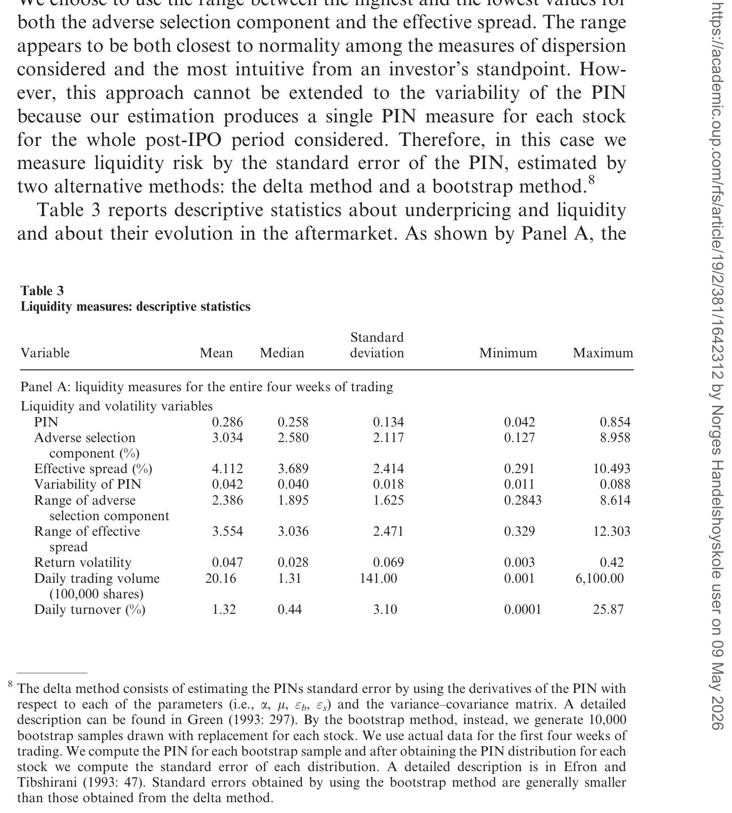
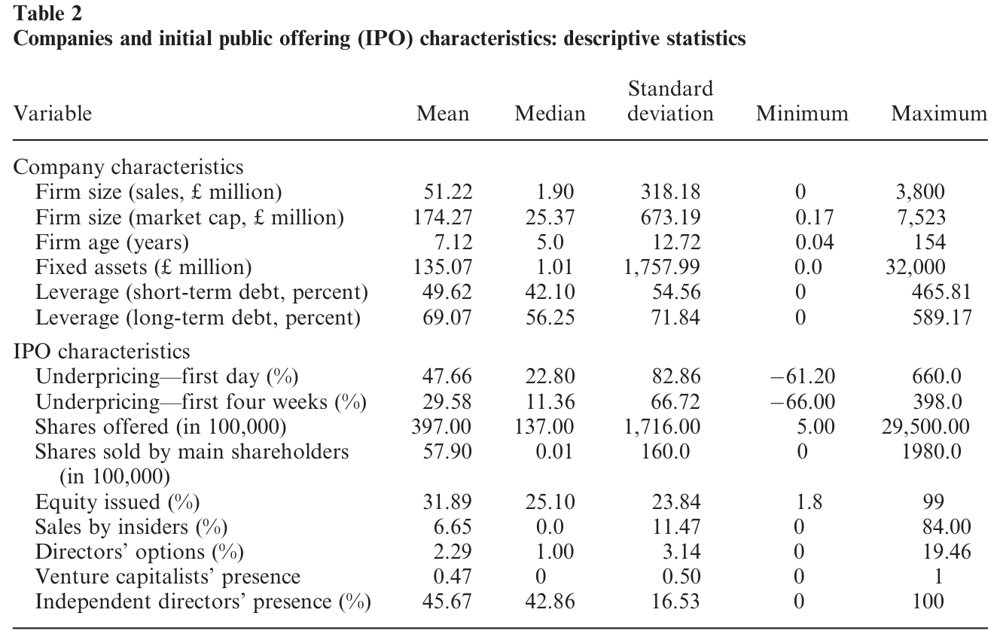
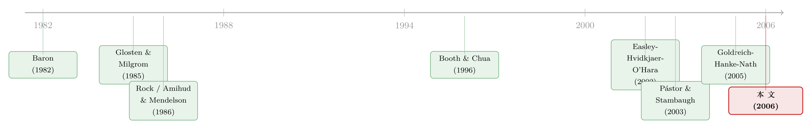

打折卖新股，是为了补偿你「将来不好脱手」的那份担心
本文读的是 Ellul & Pagano (2006, Review of Financial Studies)：新股发行折价 (IPO underpricing) 不只是为了补偿「这只股票值多少」的不确定，更是为了补偿「上市之后这只股票好不好卖」——预期的二级市场流动性越差、流动性越没准头，IPO 折价就越大。作者用一个把 Rock 模型和 Glosten–Milgrom 模型「焊」在一起的小模型给出预测，再用 1998–2000 年间 337 家伦敦上市的英国 IPO 加以验证。
1 一个被晾了二十年的问题
新股上市第一天往往「跳涨」，这是金融学里被研究得最透的现象之一。教科书的标准答案有两套：一套讲信息不对称——发行人、投行、知情投资者之间谁更懂这家公司的真实价值，谁就占便宜，于是必须在发行价上「留点钱在桌上 (money on the table)」，把没占到信息的人哄进场；另一套讲风险——公司前途未卜，投资者要补偿。Baron (1982)、Rock (1986)、Benveniste & Spindt (1989)、Welch (1992)，这条线已经写得密密麻麻。
但你有没有想过一个特别朴素的问题：投资者买下新股之后，是要卖出去的。卖的时候顺不顺手，要不要被做市商狠狠咬一口买卖价差，这件事难道不该影响他今天肯出多少钱吗？
这就是 Ellul 和 Pagano 抓住的那条缝。他们一句话点破了二十年文献的盲区：人们早就知道成熟股票的收益里含着一块「流动性溢价 (liquidity premium)」——越不好卖的股票，要求的回报越高（Amihud & Mendelson 1986 开的头）。可一只正在被「生出来」的股票，凭什么就不用付这块溢价？更何况，在 IPO 这个时点上，投资者连未来的二级市场到底有多好卖都还不知道。于是他们不仅要为「预期不好卖」要补偿，还要为「不好卖这件事本身有多没谱」——也就是流动性风险 (liquidity risk)——再要一份补偿。
一句话概括全文的张力：IPO 折价 = 价值的不确定 +「将来卖不掉」的预期成本 +「将来好不好卖说不准」的风险。 前者是老故事，后两者是本文的新东西。
2 模型：把两个经典模型焊在一起
这是一篇有正经理论模型的论文，我们值得把它一步步拆开。它的精巧之处在于，同时装进了两个完全不同的经典框架：一级市场的逆向选择用的是 Rock (1986) 的「赢家诅咒」，二级市场的买卖价差用的是 Glosten & Milgrom (1985) 的「知情交易者把价差推宽」。
2.1 三个时点与两层私有信息
模型有三个时点：\(t=0\) 是 IPO 发行；\(t=1\) 股票在二级市场交易；\(t=2\) 股票按基本面价值清算。公司的基本面价值写成
$$\tilde{V} = V + \tilde{u}_1 + \tilde{u}_2,$$
其中 \(V\) 是常数，\(\tilde{u}_1\) 和 \(\tilde{u}_2\) 是两条独立的「新闻」。\(\tilde{u}_1\) 以各 $1/2$ 的概率取 \(+\delta\) 或 \(-\delta\)，它在 \(t=1\) 一开市就公开（决定公司是「高质量」还是「低质量」）；\(\tilde{u}_2\) 以各 $1/2$ 的概率取 \(+\varepsilon\) 或 \(-\varepsilon\)，要到 \(t=2\) 才完全公开。
关键在于这两条新闻分别埋下了两个逆向选择： - \(t=0\) 时，\(N\) 个知情者已经知道 \(\tilde{u}_1\)（公司质量），\(M\) 个不知情者不知道——这是 Rock 式的一级市场逆向选择。 - \(t=1\) 时，某个内部人以概率 \(Q\) 提前看到 \(\tilde{u}_2\)（记 \(q\equiv Q/2\)）——这是 Glosten–Milgrom 式的二级市场逆向选择，它将直接写进买卖价差。
2.2 二级市场：价差怎么来的
先解 \(t=1\) 的二级市场。做市商风险中性、完全竞争，期望利润为零，所以报价就是「在收到某个方向订单的条件下，股票的条件期望值」。
收到一张卖单时，它可能来自流动性交易者（概率 \(z/(q+z)\)）或知情者（概率 \(q/(q+z)\)）。知情者只在 \(\tilde{u}_2=-\varepsilon\) 时才卖，所以卖单里掺着坏消息。做市商把这层逆向选择算进买价 (bid)：
$$\tilde{P}^B_1 = E(\tilde{V}\mid \tilde{u}_1,\text{sell}) = \frac{q}{q+z}\,(V+\tilde{u}_1-\varepsilon) + \frac{z}{q+z}\,(V+\tilde{u}_1) = V+\tilde{u}_1 - \frac{q}{q+z}\,\varepsilon.$$
对称地，卖价 (ask) 为
$$\tilde{P}^A_1 = V+\tilde{u}_1 + \frac{q}{q+x}\,\varepsilon,$$
其中 \(x\) 是做市商收到流动性买单的概率。两者相减就是买卖价差：
$$S \equiv \tilde{P}^A_1 - \tilde{P}^B_1 = \underbrace{\frac{q}{q+x}\,\varepsilon}_{S_A} + \underbrace{\frac{q}{q+z}\,\varepsilon}_{S_B}.$$
直觉很清楚：知情交易的概率 \(q\) 越大、流动性订单 \(x,z\) 越小，价差就越宽。注意卖方那一侧 \(S_B=\tfrac{q}{q+z}\varepsilon\) 只跟 \(z\) 有关、跟 \(x\) 无关——一个想卖的人面对的流动性，与买方有多活跃没关系。这个细节下面要用到。
2.3 一级市场：折价从哪里冒出来
现在回到 \(t=0\)。任何在 \(t=0\) 买入的投资者，都以概率 \(z\) 在 \(t=1\) 被迫按买价 \(\tilde{P}^B_1\) 卖出（这就是所谓的「翻炒者 (flippers)」会遇到的处境），以概率 \(1-z\) 持有到 \(t=2\) 按基本面 \(\tilde{P}_2=\tilde{V}\) 卖出。于是投资者 \(j\) 愿意按 \(P_0\) 申购的条件是
$$z\,E\!\left(\tilde{P}^B_1\mid\Omega^j_0\right) + (1-z)\,E\!\left(\tilde{P}_2\mid\Omega^j_0\right) \ge P_0.$$
对不知情者来说，他还得算上赢家诅咒：他能申购成功、拿到高质量股票的概率记为 \(\theta_u\)。把上面两期价格的条件期望代进去，整理出不知情者愿意参与 IPO 的条件：
$$V - (1-2\theta_u)\,\delta - z\,\frac{q}{q+z}\,\varepsilon \ge P_0.$$
发行人会把发行价定到让这个不等式恰好取等号的最高水平（这样也自动保证了知情者的参与条件成立）。于是核心结果浮出水面——发行价 \(P_0\) 被两件事压低：
看清楚那第三项 \(z\cdot S_B\) 了吗？这就是全文的灵魂。它说：发行价里直接扣掉了一块「将来卖出时要被做市商咬掉的价差」的预期值。二级市场价差 \(S_B\) 越大、被迫卖出的概率 \(z\)（翻炒者越多）越高，IPO 折价就越深。
这一步是真正关键的反转。Booth & Chua (1996) 也讲过 IPO 折价与流动性，但他们的因果是反过来的：折价 → 招来更多分散股东 → 创造了流动性。Ellul–Pagano 把这个逻辑掉了个头——因果从二级市场流动性流向IPO 折价，而且符号相反：在他们这里，流动性越好，折价反而应该越小。
2.4 再加一层：流动性风险
以上是风险中性的基准版。作者接着把投资者改成风险厌恶，折价里又多出了基本面风险、它与逆向选择的交互项、以及一个价差的二次项。最后，他们假设在 IPO 时点投资者并不确切知道未来价差 \(S\) 的水平——于是折价不仅随价差的期望上升，还随价差的方差（流动性风险）上升。投资者要的，是对「将来交易成本」的补偿，外加对「这成本有多没准」的补偿。
3 识别策略：为什么偏偏要用英国数据
模型给了两条可检验的预测：折价随预期不流动上升、随流动性风险上升。但要干净地检验它，数据环境的选择本身就是识别的一半。作者特意挑了伦敦交易所 (London Stock Exchange, LSE)，理由有三，每一条都是在堵一个内生性的窟窿：
第一，英国没有美国那种无孔不入的「承销商护盘 (underwriter stabilization)」。 在美国，主承销商上市后往往亲自下场做市（Aggarwal 2000；Ellis, Michaely & O'Hara 2000a），人为地把流动性「托」上去。这会制造一个伪相关：折价和流动性同时被护盘行为驱动，你分不清谁导致谁。英国投行更专业化、很少兼做市（Ljungqvist 2002），这个混淆源就被关掉了。
第二，英国 IPO 大多用固定价格法 (fixed-price method)。 Busaba & Chang (2002) 指出，簿记建档 (bookbuilding) 会在发行阶段就把知情者的信息「榨」出来，从而削弱二级市场的逆向选择；固定价格法不榨信息，逆向选择就从一级市场「溢」到二级市场。所以在以固定价格为主的英国，流动性对折价的影响理应更强——这等于把信号放大了。
第三，LSE 的高频数据能精确识别每笔交易的买卖方向。 美国的 TAQ 数据只能靠算法去猜方向，而 Finucane (2000)、Ellis–Michaely–O'Hara (2000b) 已经证明这些算法误差不小，会把有效价差估歪。英国数据没有这个毛病——这对一篇靠准确度量价差吃饭的论文是命门。
至于流动性的度量，作者刻意选了和信息不对称挂钩的指标，因为模型里的不流动正是信息驱动的：知情交易概率 PIN (probability of informed trading, Easley et al. 1996)、价差的逆向选择成分，以及作为稳健性检验的有效买卖价差本身。一个有意思的实证副产品是：PIN 和逆向选择成分在 IPO 后的头几周都稳步下降——这恰好印证了「IPO 之后信息不对称特别大、随后逐步消退」这一建模出发点。
4 数据与结果
样本是 1998 年 6 月到 2000 年 12 月间在 LSE 上市的全部公司，共 337 家英国 IPO。表 2 给出样本的基本描述，表 3 则专门刻画折价与各项流动性指标的分布。

Table 3: reports descriptive statistics about underpricing and liquidity
作者反复强调的一个事实是：IPO 股票的二级市场，比成熟股票要不流动得多——这恰恰说明，把成熟市场里的流动性溢价推广到一级市场是合理的，甚至更迫切。
核心结论与模型方向一致：预期流动性越低、流动性风险越高的新股，IPO 折价越大；而且这一效应在控制了一大堆传统解释变量后依然稳健——这些控制变量包括捕捉信息不对称的（风险投资是否在场、承销商声誉、近期 IPO 的数量与规模、内部人期权持有），以及捕捉基本面风险的（公司年龄、总资产、上市后中间价的标准差）。结论也不依赖于具体的计量方法。

Table 2: provides descriptive statistics for the IPOs in our sample. The
我手头的正文在实证系数表之前被截断，因此不逐一复述每个回归系数的点估计；上面报告的是论文明确陈述的方向与稳健性，以及样本规模（337 家、1998–2000）。读者若要引用具体的 \(\beta\) 与 \(t\) 值，请回到原文的回归表，我不在这里替它「填空」。
5 文献脉络
把这篇文章放进谱系里看，它其实是两条河的交汇口。
一条河是 IPO 折价的信息理论：Baron (1982) 让投行比发行人更懂价值；Rock (1986) 把不对称放在投资者之间，造出赢家诅咒；Benveniste & Spindt (1989) 用簿记建档从投资者那里换信息；Welch (1992) 让折价点燃信息瀑布。这条河里唯一碰过「流动性」的是 Booth & Chua (1996)——但如前所述，他们的因果是反的。
另一条河是 流动性与收益：Amihud & Mendelson (1986) 第一个把买卖价差写进资产定价，随后 Brennan & Subrahmanyam (1996)、Eleswarapu (1997)、Datar–Narayan–Radcliffe (1998)、Chordia–Roll–Subrahmanyam (2000) 一路把横截面证据做厚；再往后，Pástor & Stambaugh (2003) 把流动性风险也定成了价格因子，Easley–Hvidkjaer–O'Hara (2002) 则证明「信息风险」（用知情交易概率度量）是被市场定价的。最贴近本文神髓的是 Goldreich–Hanke–Nath (2005)：他们用国债从 on-the-run 到 off-the-run 的可预测流动性变化证明，今天的价格取决于预期的未来流动性，而非当下流动性——Ellul–Pagano 等于把这个洞见从国债搬到了一级股票市场。

而把两条河接通的「水闸」，是 Glosten & Milgrom (1985)：正是它告诉我们，二级市场的价差怎样从知情交易里内生出来。本文的全部巧思，就在于把这道闸门接到了 Rock 模型的下游。
（顺带一提，「上市第一笔成交就白赚一截」这件事，并不是股票的专利——公司债市场里也有同样的折价之谜，参见《新债上市第一笔成交，凭什么白赚 47 个基点？》；而「不好脱手要打几折」的逻辑，在场外市场被刻画得更直白，见《价格里那道折扣，量的是「找不到买家」的时间》。关于英国市场这块「干净试验田」的其它用法，也可参见《个人税，悄悄定价了你的股票——一个来自伦敦 AIM 的干净实验》。）
6 评论与延伸（Q&A + 研究方向）
(a) 几个可能的疑问
Q：这和 Booth & Chua (1996) 的「流动性—折价」到底差在哪？
差在因果方向和符号。Booth–Chua 是「折价→招来分散股东→创造流动性」，预测折价越高流动性越好；本文是「（外生于发行价的）二级市场流动性→折价」，预测流动性越好、折价越低。更关键的是，本文还多出一个 Booth–Chua 没有的预测：折价要补偿流动性风险，而不只是流动性水平。
Q：折价里那块流动性成本，凭什么是「卖方价差」\(S_B\) 而不是整个价差 \(S\)？
因为 IPO 折价只由二级市场的卖方决定。模型里投资者在 \(t=1\) 是被迫卖出（翻炒），他面对的是买价 \(\tilde{P}^B_1\)，对应的成本是 \(S_B=\tfrac{q}{q+z}\varepsilon\)。作者明确指出，哪怕做市商在二级市场只收到卖单，IPO 折价也分毫不变——买方那侧的活跃度 \(x\) 与折价无关。
Q：为什么非得用英国数据，美国数据不行吗？
美国 IPO 普遍有承销商护盘，会人为抬高上市后流动性，制造折价与流动性之间的伪相关，甚至护盘本身（通过减少初始负收益，Ruud 1993）就能解释折价；而且美国靠算法推断交易方向会把价差估歪。英国几乎没有护盘、以固定价格法为主（放大流动性效应）、且高频数据能精确判定交易方向——三点都在堵识别的窟窿。
Q：模型里加不加「知情交易」这层假设，结论会不会变？
作者说，即便价差源于做市商的存货成本或订单处理成本（而非信息不对称），结论也定性不变。他们之所以坚持用信息不对称建模，是因为 IPO 之后正是「关于基本面还有大量学习要做、未来私有信息风险最大」的时候——而 PIN 和逆向选择成分在 IPO 后逐周下降的事实，支持了这个选择。
Q：「流动性风险」这个新预测，真的能和「流动性水平」分开识别吗？
这是全文最吃数据的地方。作者的做法是用各种方法估计市场在 IPO 时点、基于当时可得信息所预期的未来流动性及其变异性。能不能干净地把「期望」和「方差」两个矩分开，取决于这些预期度量的构造质量——这也是后续质疑最该盯住的地方。
Q：翻炒者（flippers）多的市场，效应该更强还是更弱？
更强。折价里的流动性项是 \(z\cdot S_B\)，\(z\) 正是被迫卖出/翻炒的概率。翻炒越普遍，投资者越在乎二级市场卖出成本，折价与流动性的相关就越紧。这给出了一个可按市场/承销方式分组检验的横截面含义。
(b) 几个可能的研究问题与提案
1. 把这套逻辑搬进公司债一级市场。 【经济故事】公司债比股票更不流动、且不流动性高度时变；新债上市同样存在折价（见上文交叉引用）。「预期二级市场流动性 + 流动性风险」是否定价了新债的发行折价？这几乎是本文逻辑的天然延伸。 【可行性】高。TRACE 提供成交层面的价差与流动性度量，发行端有 Mergent FISD；识别上可借鉴本文「用信息型流动性指标 + 控制传统折价因素」的设定，难点在于债券发行价的基准与「翻炒」的度量。
2. 外资持有人与 IPO 折价的流动性通道。 【经济故事】外资进入会改变二级市场的知情交易结构与流动性（关于外资对信息传导与流动性的影响，可参见《外资来了，全球新闻就传得更快吗？》）。若外资改变了预期流动性与流动性风险，本文模型预测它会系统性地移动 IPO 折价。 【可行性】中。需要跨国 IPO 样本 + 外资可投资度（investability）的外生变动作为识别（如指数纳入、QFII 额度变化），数据可得但识别需精心设计。
3. 监管冲击下的「流动性折价」自然实验。 【经济故事】MiFID、Reg NMS 等微观结构改革直接改变了二级市场流动性与价差结构。若把改革当作对「预期流动性」的外生冲击，可在 IPO 折价上检验本文的因果方向。 【可行性】中。改革日期是干净的时间断点，但要把「流动性渠道」与同期其它制度变化分离，需要 DiD + 安慰剂检验。
4. 直接检验「流动性风险」这一独立预测。 【经济故事】本文最具区分度的预测不是流动性水平，而是其不确定性。能否构造一个 IPO 时点的「预期价差波动」度量（如行业内近期 IPO 价差的离散度），单独检验它对折价的边际贡献？ 【可行性】中。难点是「事前」度量的构造与内生性，但若做成，是对本文最锋利的一次再检验。
我的判断
贡献。 这篇文章漂亮在「接管道」：它没有推翻任何旧理论，而是把两个各自成熟的经典框架（Rock 的一级市场逆向选择、Glosten–Milgrom 的二级市场价差）严丝合缝地接在一起，从中长出一个干净的新预测——折价补偿的是「将来卖出时的交易成本及其不确定性」。把成熟市场里早已被接受的「流动性溢价」推广到一级市场，这个动作既自然又此前无人做过。选英国数据来同时规避护盘、利用固定价格法放大效应、并取得可精确判向的高频数据，是教科书级别的识别意识。
对识别的担忧。 我最不放心的是「预期流动性」与「流动性风险」这两个事前量的构造。它们不是直接观测的，而是估计出来的；一旦事前预期的代理变量里混进了与折价共同决定的成分（比如公司质量、承销商选择），因果方向就可能被悄悄污染。承销商选择（固定价格 vs. 簿记）本身也是内生的——虽然作者控制了它，但「为什么这家公司选了这种发行方式」可能同时关联着它未来的流动性。
后续想看到什么。 一是一个把「流动性风险」与「流动性水平」彻底正交化的识别设计；二是用一次外生的微观结构改革，把因果方向钉死；三是把这套逻辑搬到公司债与信用市场——那里不流动性更严重、更时变，本文的机制理应更强，也更有政策含义。
参考文献
- Aggarwal, R. (2000). Stabilization Activity by Underwriters After Initial Public Offerings. Journal of Finance 55(3), 1075–1103.
- Amihud, Y., & Mendelson, H. (1986). Asset Pricing and the Bid-Ask Spread. Journal of Financial Economics 17(2), 223–249.
- Baron, D. P. (1982). A Model of the Demand for Investment Banking Advising and Distribution Services for New Issues. Journal of Finance 37(4), 955–976.
- Benveniste, L. M., & Spindt, P. (1989). How Investment Bankers Determine the Offer Price and Allocation of New Issues. Journal of Financial Economics 24(2), 343–361.
- Booth, J. R., & Chua, L. (1996). Ownership Dispersion, Costly Information, and IPO Underpricing. Journal of Financial Economics 41(2), 291–310.
- Busaba, W. Y., & Chang, C. (2002). Bookbuilding vs. Fixed Price Revisited: The Effect of Aftermarket Trading. Working Paper, University of Minnesota.
- Easley, D., Kiefer, N. M., O'Hara, M., & Paperman, J. B. (1996). Liquidity, Information, and Infrequently Traded Stocks. Journal of Finance 51(4), 1405–1436.
- Easley, D., Hvidkjaer, S., & O'Hara, M. (2002). Is Information Risk a Determinant of Asset Returns? Journal of Finance 57(5), 2185–2221.
- Ellis, K., Michaely, R., & O'Hara, M. (2000a). When the Underwriter is the Market Maker: An Examination of Trading in the IPO Aftermarket. Journal of Finance 55(3), 1039–1074.
- Glosten, L., & Milgrom, P. (1985). Bid, Ask, and Transaction Prices in a Specialist Market with Heterogeneously Informed Traders. Journal of Financial Economics 14(1), 71–100.
- Goldreich, D., Hanke, B., & Nath, P. (2005). The Price of Future Liquidity: Time-Varying Liquidity in the U.S. Treasury Market. Review of Finance 9(1), 1–32.
- Pástor, L., & Stambaugh, R. (2003). Liquidity Risk and Expected Stock Returns. Journal of Political Economy 111(3), 642–685.
- Rock, K. (1986). Why New Issues are Underpriced. Journal of Financial Economics 15(1/2), 187–212.
- Ruud, J. S. (1993). Underwriter Price Support and the IPO Underpricing Puzzle. Journal of Financial Economics 34(2), 135–151.
- Welch, I. (1992). Sequential Sales, Learning and Cascades. Journal of Finance 47(2), 695–732.